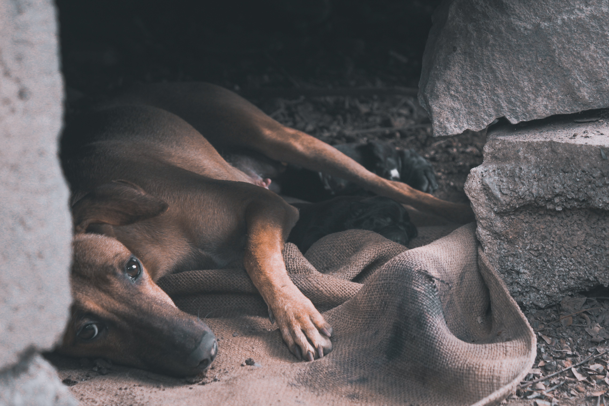

Oque o Tampet faz?
O Projeto TamPets coleta e vende tampinhas de plástico e destina o valor arrecadado em benefício da causa animal.

Oque fizemos em 2023?
3000
Animais resgatados
50
Voluntarios novos
1M
Quilos de tampinhas
Mais sobre a fundação
Nosso papel
Há 14 anos, a ONG Tampet dedica-se a ajudar animais em situação precária.
Como trabalhamos
Coletamos tampinhas de plástico, as vendemos e reinvestimos o lucro em abrigos, alimentos e outros cuidados para animais.